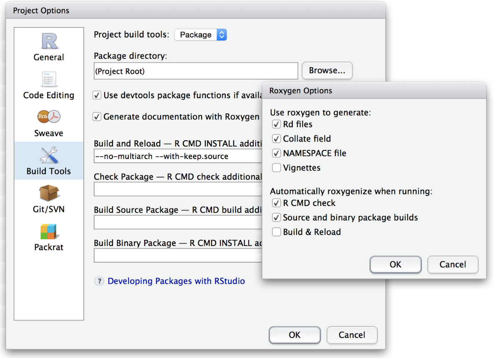
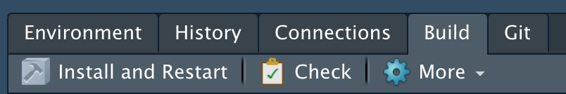
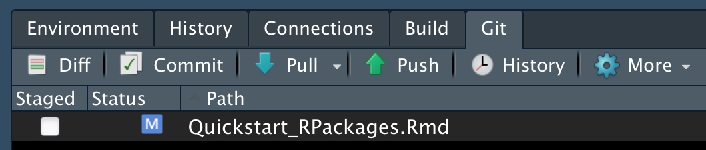

Quickstart Guide to R Package Building
Cory Merow
9/24/2019
1 Getting started
You may need to install some software for this sequence of 3 tutorials.
- RStudio (convenient way to interact with R) :
https://www.rstudio.com/products/rstudio/download/#download - git (version control):
https://git-scm.com/downloads - Create a GitHub account (sharing code online) at
https://github.com/ - R packages (for these demos):
install.packages(c('knitr','shiny','rmarkdown'), dep=T) - pandoc (to convert among document formats like html, pdf, docx):
http://pandoc.org/installing.html
These are sprinkled throughout. Only read them if everything is going really well…
2 Why Build a package?
- Sharing code
- Reproducible research
- (Indirectly) Keeps your work organized so your code is less error-prone
- Future you will appreciate you more
- Advancing your programming skills for other applications
For anyone using this document outside of a lecture, please note that this lesson is designed to distill the key features of a package for publishing reproducible research. These are my opinions on the key features or package building and which details are worth the time they take. This approach cuts details that can take beginners a lot of time to wade through, keeping them away from the science that motivates their efforts. This approach is not designed for generic packages that will be broadly used. There are many better resources for that.
The first practical advantage to using a package is that it’s easy to re-load your code. You can either run devtools::load_all(), or in RStudio press Ctrl/Cmd + Shift + L, which also saves all open files, saving you a keystroke.
Hadley says:: The first practical advantage to using a package is that it’s easy to re-load your code. You can either run devtools::load_all(), or in RStudio press Ctrl/Cmd + Shift + L, which also saves all open files, saving you a keystroke.
2.1 Topics we’ll cover
We’ll quickly generate a working example, and work backwards to understand the components.
- Package structure - what are all the different files for?
- Writing Functions
- Documentation (with Roxygen2)
- The ****** DESCRIPTION file
- Checking and Building packages
- Distributing packages (github)
- General Tips
- Things to read more about
These are sprinkled throughout. Only read them if everything is going really well…
3 Package structure
Let’s start by making your first package. Start a new project in RStudio (File…New Project). A box pops, where you can choose ‘New Directory’, followed by ‘R Package’ to get to this screen:

Think of a name for your package. I’m choosing Merow2017Nature because that might be the name of a paper I’m sharing code for. Note that you should check the box ‘Create a git repository’. We’ll come back to that later. Selecting ‘Create project’ will build a template with all the essential files for a package. Done. You made a package.
Packages have four required components:
- a file called DESCRIPTION. It contains metadata about the package
- a directory called R. It has the code
- a directory called man. It has the documentation (and not men, counter intuitively)
- a file called NAMESPACE. I lists functions in the package (automatically generated, so not interesting)

Then there are some optional files too. The .Rproj one stores info for developing with RStudio as with any other projects you have, while .gitignore and .Rbuildignore will come up later, along with some others we haven’t made yet for sharing data, vignettes, etc.
4 Writing Functions
Now we need to add some functions. We’ll get into a bunch of details on writing functions later, but here are some easy ones so we can focus on the package making process first. Put them in a file (or their own files) in the R/ folder of your package. You can organize them there and name files however you like. I like to use many files with veryShortandConciseNamesWrittenInCamelCase.
# thanks to software carpentry for the nice demo functions!
fahrenheit_to_celsius <- function(temp_F) {
# Converts Fahrenheit to Celsius
temp_C <- (temp_F - 32) * 5 / 9
return(temp_C)
}
celsius_to_kelvin <- function(temp_C) {
# Converts Celsius to Kelvin
temp_K <- temp_C + 273.15
return(temp_K)
}
fahrenheit_to_kelvin <- function(temp_F) {
# Converts Fahrenheit to Kelvin using fahrenheit_to_celsius() and celsius_to_kelvin()
temp_C <- fahrenheit_to_celsius(temp_F)
temp_K <- celsius_to_kelvin(temp_C)
return(temp_K)
}5 Documentation (with roxygen2)
Documentation is a required element of an R package. roxygen2 is where its at; I haven’t noticed anyone use anything else in years. It’s convenient because your code and the documentation live together in the same file and the NAMESPACE file (describing your exported functions and other people’s imported functions) is automatically generated.
roxygen2 reads lines that begin with #’ as comments to create the documentation for your package. Descriptive tags are preceded with the @ symbol. For example, @param has information about the input parameters for the function. Here’s a minimal example
#' @title Converts Fahrenheit to Celsius
#'
#' @description This function converts input temperatures in Fahrenheit to Celsius.
#' @param temp_F The temperature in Fahrenheit.
#' @return The temperature in Celsius.
#' @export
#' @examples
#' fahrenheit_to_kelvin(32)
fahrenheit_to_celsius <- function(temp_F) {
temp_C <- (temp_F - 32) * 5 / 9
return(temp_C)
}Ideally, you should write the type of documentation you’d like to read. But if you’ve ever used stackoverflow, it’s clear that many people don’t really read documentation. So I think the most critical part to do really well is choosing informative, commented examples.
Now that you’ve written the documentation, you need to ‘build’ the documentation files (the .Rd files that live in the man/ folder). You might need to configure your RStudio session to tell roxygen2 to generate them by selecting these settings :

Now you can build the man/ files:
devtools::document()Go have a look at one; you can preview how it would appear to a user with the Preview button:

A list of all available tags is below. Don’t be skerd; you’re likely to need 6-7 more of them, like @note, @references, @author. Maybe @details, @family, @seealso.
names(roxygen2:::default_tags())## [1] "evalNamespace" "export" "exportClass"
## [4] "exportMethod" "exportPattern" "import"
## [7] "importClassesFrom" "importFrom" "importMethodsFrom"
## [10] "rawNamespace" "S3method" "useDynLib"
## [13] "aliases" "author" "backref"
## [16] "concept" "describeIn" "description"
## [19] "details" "docType" "encoding"
## [22] "evalRd" "example" "examples"
## [25] "family" "field" "format"
## [28] "inherit" "inheritParams" "inheritDotParams"
## [31] "inheritSection" "keywords" "method"
## [34] "name" "md" "noMd"
## [37] "noRd" "note" "param"
## [40] "rdname" "rawRd" "references"
## [43] "return" "section" "seealso"
## [46] "slot" "source" "template"
## [49] "templateVar" "title" "usage"The NAMESPACE file is one for the 4 essential files in a package, and is automatically generated when you use document(). It lists all the functions that are exported, which means that other users have easy access to them when they load your package, as well as functions you imported from other packages using @importFrom in your roxygen2 documentation. Here’s an example:

Go have a look at the one generated by your demo package.
6 The ******* DESCRIPTION file
The DESCRIPTION file contains all the metadata needed for your package. Seems pretty straightforward. Lots of obvious info to provide. But you can spend a lot of time debugging cryptic errors if you don’t get the syntax perfect perfect.
Here’s an example of one from our maskRangeR package.

Here are some very interesting details that are important to save you time:
- The Title field must capitalize the first letter of each word.
- Just use
as.person()for the Author field. Previously there were more flexible ways to specify this, but its a standard now. - Description must be a paragraph. And don’t think a paragraph is two sentences long, buddy, or CRAN will tell you otherwise. They now subcontract with the paragraph police.
- My LICENSE field has a standard MIT license and refers to an optional second file, called LICENSE, which lives in you root directory and includes any other specifications you want.
- In Imports and Suggests, make sure packages are on their own lines, tab indented, and have no spaces between lines.
You probably shouldn’t have as many dependencies as I do here. It can make it tough to maintain your package if others change. But it works often. A better solution is just to import the specific function you need from another package, if you only need 1 or 2 functions from that package.
I read somewhere that the Description field should only have 80 characters per line. I’ve succeeded getting packages on CRAN without that formatting a while ago, but is it worth the risk?
7 Check, Install, Build
These three steps are lumped together here because you’re often jumping back and forth between them as you’re honing in on a working package.
Note that you can use the point and click interface on RStudio’s Build menu or check(), build(), and install() for these steps if you’re averse to clicks.

7.1 Check
To ensure you’ve followed the right protocols when designing your package, R offers checking tools. There are options, but it’s safest just to check with CRAN’s standards as they’re rigorous. To check for problems, either click the Check button shown above or type check() in the console. A very long litany of obscure details will likely follow. You’re looking for NOTES, WARNINGS and ERRORS. Don’t worry about everything else. The goal is to address these issues such that none remain when you run check() the final time. check() the package we’ve been building to try for yourself. We’ll do some more elaborate checks in a demo below.
7.2 Install
Once you’ve passed all the checks, you can click Install and Restart or type install() in the console. Now your package is loaded in R and ready to use.
7.3 Build
If you’d like to share a zipped up version of the package, e.g., as you’d submit to CRAN, choose Build Source Package from the drop down menu.

# Demo
Here’s the plan. I want you to see what a fully functional R package looks like, but I don’t want it to include a bunch of stats that obscure the challenge of understanding the package structure. So we’ll fix a version of my rangeModelMetadata package that I’ve intentionally introduced errors to. This package just works with text to create an list or CSV of text that represents metadata for species distribution models.
- Create a new package called
intentionallyBrokenRangeModelMetada - Download these files.
- Put the files in your root directory (the one called intentionallyBrokenRangeModelMetada)
- Run
devtools::document()just to be sure all the manuals are built. - Run
check()either from the command line or through RStudio. - Start debugging with any problems you find, rerunning
check()periodically to see if you’ve succeeded. Hint: I’ve only introduced 1 error per function. - You’re done when there are no more NOTES, WARNINGS or ERRORS.
8 Optional (useful) package elements
8.1 Vignettes
Vignettes are super important. If someone is going to read one thing you write in your package, it’s likely the vignette. Its easiest to write vignettes with R markdown. R markdown is also a way to share project reports and make websites like this, so learning it enables more options. Here’s a full lesson I made; we’ll just skim it here. Let’s make a vignette for the demo package you were building (not the one you just debugged, so you’ll have to switch projects in RStudio.)
Here are some super useful guides; really they contain almost all you need to know, and I think you can just experiment after skimming them.

https://www.rstudio.com/wp-content/uploads/2015/02/rmarkdown-cheatsheet.pdf
The reference guide is a little more comprehensive
8.1.1 Create new file
In Rstudio: File -> New File -> RMarkdown -> Document -> HTML

This will open a document that looks like this:

You’ll need to make a folder called /vignettes/ in your root directory, and save it there. This is a .Rmd file.
All R code to be run must be in a code chunk like this:
## #```{r,eval=F}
## # CODE HERE
## #```Add a new code chunk at the bottom of this template file.
celsius_to_kelvin(0)## [1] 273.15fahrenheit_to_kelvin(32)## [1] 273.15To see how this will look when built, press CMD+Shift+K (to ‘knit’ the document using the knitr package).
Let’s add a plot, which will show up in the doc.
far=seq(0,220,length=100)
kel=fahrenheit_to_kelvin(far)
plot(far,kel)To create the document in html, just hit CMD+Shift+K to knit.
Next, try exploring some more features of Rmds, outlined in the cheatsheets above. I find that some of the most useful additional tools are:
Supplying arguments to a chunk of code (section 5 of the cheatsheet), to avoid evaluation or hide results (
eval=FALSEorresults='hide'). E.g., this can be a good way to load past results for code that’s slow.Adding images, e.g., to show figures from a paper.
Adding latex equations by surrounding code with $$. E.g., $$\alpha$$ gives
αChanging options in the YAML header to make the doc fancier. Try replacing
output: html_documentwith
output:
rmarkdown::html_vignette:
toc: true
number_sections: true
toc_depth: 3Although you can build your vignettes with the Knit button in RStudio to test them out, you need to formally build them for the package with devtools::build_vignettes(). Try it out.
Note that the doc/ folder is created, and this is where your vignettes are stored when the package is built. This is kind of confusing because it seems redundant with the vignettes folder. Don’t edit these, always be sure to edit the files in the /vignettes/ folder.
8.2 Junk drawer: /inst/extdata
Particularly when sharing code for a single paper, it can be helpful to include a variety of auxiliary files used for this or that. Maybe they’re scripts you use with the package, or data you’re too lazy to write documentation for, or notes to future you. For these, create the inst/ folder in your root directory, and the extdata/ folder in that. Put anything you like there.
It can be helpful to access those files when the package is installed with something like:
## ddFile=system.file("extdata/dataDictionary.csv",package='rangeModelMetadata')
## system(paste0('open ', ddFile, ' -a "Microsoft Excel"'))8.3 Distributing packages (github)
I’m just going to demonstrate the super simple clicky version of using github with RStudio. If you want more features or to try the command line, try this easy tutorial. There are many others too; no need to reproduce here. (There’s a reproducibility joke here somewhere that I’m missing ….)
Follow these instructions to create a new github repo and add the package you’ve been working with to it. Then follow these steps to save your changes on the github website.
- Modify any file in you repo and save the file.
- Under the Git tab in RStudio, notice that the file is now listed:

- Select the checkbox under Staged and click Commit. Here you save edits and provide a ‘commit message’ describing them very briefly (e.g., in case you need to revert to them later).
- To get these changes on github for everyone to see, click Push.
That’s it; your code is tracked and on github. Of course there are many more powerful ways to use git to collaborate with multiple code authors, to explore ideas and revert back to older ones if they fail, etc. But all these few steps are all you really need to share packages online. More detailed instructions are here.
Now, others can install your package using install_github().
8.4 .gitignore
It is useful to avoid sending all your files to github; some may be used for testing, are too large, are temp files or helper files that no one cares about.
The .gitignore file in your root directory stores rules for what to ignore.Here’s what I always include in my .gitignore, borrowed from various smarter people. Try putting this in your package and see if it breaks.
## # Meta
## # doc
## # .Rproj.user
## # .Rhistory
## # .RData
## # .Ruserdata
## #
## # # History files
## # .Rapp.history
## # # Session Data files
## # # Example code in package build process
## # *-Ex.R
## # # Output files from R CMD build
## # /*.tar.gz
## # # Output files from R CMD check
## # /*.Rcheck/
## # # RStudio files
## # .Rproj.user/
## # # OAuth2 token, see https://github.com/hadley/httr/releases/tag/v0.3
## # .httr-oauth
## # # knitr and R markdown default cache directories
## # /*_cache/
## # /cache/
## # # Temporary files created by R markdown
## # *.utf8.md
## # *.knit.md
## # .DS_Store
## # .Rbuildignore
## Importantly * is a wildcard symbol, so something like *-Ex.R means ignore all the files that end in -Ex.R. Or you can list every single file manually if you’re into that sort of thing.
Note that you might want to stop ‘tracking’ a file with git. Here are instructions.
git is super powerful for teams of people working on code concurrently to avoid breaking one another’s work. But it takes some learning. git is awesome for tracking your edits and sharing on github with the simple approach shown here. I don’t do much fancy branching, merging or pull requesting, because I spend more time fixing mistakes I thought I understood. This is clearly because I’m just a gitiot and not git’s fault. But I’d recommend saving your time learning git more fully until you really really need it.
9 General Tips
9.1 Writing Functions
Hidden functions don’t need documentation If you need helper functions that users won’t need access to you can make them hidden by beginning the function name with a period. Hidden functions don’t require documentation, so this can also be a useful way to avoid check WARNINGS when code is in development. Try adding this function to your package and run check to be sure you don’t get any errors
.fahrenheit_to_celsius2 <- function(temp_F) {
temp_C <- (temp_F - 32) * 5 / 9
return(temp_C)
}Passing arguments Sometimes other functions are embedded in your function, and you’d like to pass arguments to them. For example, below, I add an option to make a plot and the plot function has a wide range of options that you might want to customize. You can add ... to your function’s arguments, and ... to the function you’re passing arguments to to achieve this:
fahrenheit_to_celsius3 <- function(temp_F,doPlot=F,...) {
temp_C <- (temp_F - 32) * 5 / 9
if(doPlot) plot(temp_F,temp_C,...)
return(temp_C)
}
far=seq(0,100,by=1)
fahrenheit_to_celsius3(far,doPlot=T,col='red',pch=19,cex=.7)9.2 Debugging
browser() and debug() provide complementary ways to explore errors and see exactly what’s going on inside your function, in the environment its working with. Each allows you to step through the function line by line to explore problems. browser() is inserted inside the function on the line you want to begin exploring at. Try running this:
fahrenheit_to_kelvin <- function(temp_F) {
# Converts Fahrenheit to Kelvin using fahrenheit_to_celsius() and celsius_to_kelvin()
temp_C <- fahrenheit_to_celsius(temp_F)
browser()
temp_K <- celsius_to_kelvin(temp_C)
return(temp_K)
}
fahrenheit_to_kelvin(17)## Called from: fahrenheit_to_kelvin(17)
## debug at <text>#5: temp_K <- celsius_to_kelvin(temp_C)
## debug at <text>#6: return(temp_K)## [1] 264.8167There are three key commands to advance through the lines of code when in browser() or debug(): - n evaluate this line and move to next - c continue running lines till the function ends or breaks - Q get out of debug mode. Within debug mode, you can type any of the usual commands you’d use in R to see what objects in the environment look like, or to run other tests.
Alternatively to browser(), you can call debug(yourFunctionName) to step through every line, as though you had put your browser() command on line 1 of your function. undebug() gets you out of debug mode.
9.3 Messages
The best packages include a variety of checks at the beginning of functions to determine whether you might’ve input something incorrectly, and giving useful advice if you have. No one polices this; the level of detail you provide is something that you have to be able to sleep with at night. Usually, these tests involve printing something to the console. You might be used to using print or cat to send text to the console. For packages you need to use message or warning for the same tasks so that users can have control over the output, e.g., with supressMessages.
It’s also useful to include stop to force the function to error out. You can consider wrapping breakable expressions in try to give some more options for handling errors. Try calling function in your demo with a known error (e.g., make the argument a string) and write a try statement to catch it an the write an error message.
9.4 Adding a welcome message
Here’s an example from one my packages. Put this function in your R directory.
## .onAttach <- function(libname,pkgname) {
## packageStartupMessage('Type, vignette("rmm_directory") for an overview of functions')
## }10 Next steps
Almost always, the answer you need is briefly and well explained in Hadley Wickham’s online book here.
I just found this, so don’t know it well, but ROpenSci does a ton of smart stuff.
Obviously there’s the CRAN book on R extensions here. It tends to be long and winding and hard to search. Don’t bother with it unless you’re having trouble sleeping.
- Unit testing. A way to automatically check your code every time its built. Example
- Party line: this is the best way to ensure your code does what it says.
- What I really think: it takes a fair amount of time to think of, and code, nontrivial tests. If you’re just sharing code from a publication, its probably not necessary.
- S3 and S4 methods. So functions like
plotandprintwork with objects from your code.- Party line: These represent the true power of the object-oriented coding that makes R appealing.
- What I really think: Meh, you can just use a list and do most of the same stuff.
- Including data sets. Example
- Party line: Its not complicated.
- What I really think: I tend to include a lot, as users may find it easier access existing data. Note that on CRAN your package can’t be over a few Mb but on github, files can be up to 50 Mb. Consider RData files and RDS files; they’re usually fast and reasonably compressed, preserving the exact R object you saved. You can put them in /inst/ext/ if you’re lazy and don’t want to write documentation. Reference them with
system.file().
- Shiny apps. Like Wallace! or this Gallery of apps.
- Party line: Make your code interactive.
- What I really think: I see 2 major use cases: (1) big complicated apps like Wallace that help visualize a workflow, and (2) little snippets that you might put on your website to show off your work. I don’t see them as super useful for intermediate scales, where it takes significant effort to build the app, but it only does a part of an analysis or a very specific analysis.
- CRAN submissions.
- Party line: Your package has arrived. It’s fa real.
- What I really think: CRAN is important for widely used packages, as it enforces a number of standards which are probably critical for packages that can be used in ways the developers never even thought of. But if you’re building a more specific package, I find that there are a lot of hoops to jump through which aren’t super important for making a working code base to share.